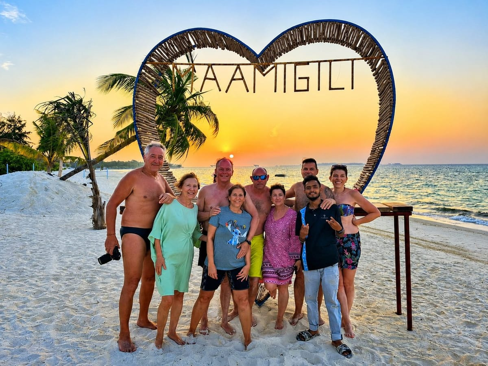

Every Maldives holiday to Maamigili starts the same way: getting from Velana International Airport (Malé) to the island itself. There are two realistic options — a short domestic flight straight onto Maamigili's own runway, or a direct speedboat — and which one fits depends on your schedule and budget more than anything else. This guide covers both in full, plus what arrival and departure actually look like on the day, and the practical things worth preparing before you travel.
Quick Facts
~20–30 min flight
Domestic flight to Villa International Airport, lands directly on Maamigili.
~90 min speedboat
Direct from Malé, daily except Friday — confirm the current schedule.
Transfer included in packages
Round-trip speedboat transfer comes with every current holiday package.
Free 30-day visa on arrival
Most nationalities, no advance application — plus the IMUGA declaration below.
Getting to Maamigili from Malé
There are two realistic ways in from Malé (Velana International Airport):
| Method | Duration | Cost | Frequency | Notes |
|---|---|---|---|---|
| Domestic flight to Villa International Airport | ~20–30 min | See current fares | 3–5 flights daily | Mainly operated by Flyme (Villa Air); lands directly on Maamigili — no separate boat transfer needed |
| Direct speedboat, Malé → Maamigili | ~90 min | Varies by operator/season; included in Vilu's holiday packages | Daily except Friday | No flight needed; longer, and subject to sea conditions |
Sources: Wiotto transfer rates; Endherisunset getting-here guide; flight duration and airline via Wikipedia. Fares and schedules shift by season, operator, and how far ahead you book — see current pricing and the live schedule below rather than treating any number here as fixed.
Which to pick: if you're short on time, traveling with real luggage, or want to skip the sea-conditions variable, the domestic flight is the practical choice — you can be at your guesthouse within the hour of landing in Malé. If your schedule has slack, the direct speedboat gets you there without booking a domestic flight, and it's the option already included in every Vilu Residence holiday package.
Because Villa International Airport (IATA: VAM) is physically on Maamigili, arriving by air skips the separate boat transfer that many other Maldivian destinations require after landing — often a 30–90 minute speedboat leg to reach the actual resort island. The airport opened as a domestic facility on 1 October 2011 and was upgraded to international standards on 1 March 2013, so some travelers can fly in on an international connection without transiting through Malé at all. (Wikipedia)
Exact current prices and flight schedules change often enough that they're better checked live than quoted here: see current transfer prices and schedules →
Arriving at Maamigili
However you arrive — by air onto Maamigili's own runway, or by speedboat into its working harbour — Vilu Residence is a short walk from both, since the guesthouse sits close to the harbour and most excursions leave from there directly. There's no long onward transfer to arrange once you've landed on the island itself.

Maamigili's harbour and airport both sit close to the island's guesthouses, Vilu Residence included.
Let us know your arrival flight or speedboat details ahead of time so we can plan your welcome accordingly — see the live Getting Here panel below for exactly what information to send us and when.
Departing Maamigili
Departure works in reverse — a domestic flight or speedboat back to Malé, timed against your onward international flight. Because both legs have their own check-in and boarding windows, it's worth building in more buffer than you might for a simple domestic itinerary elsewhere, especially if your international flight is a strict, non-refundable fare.
Not sure if your connection times leave enough buffer? Use the Timing Checker in our live Travel Information panel — enter your flight or speedboat time and it checks your plan against our recommended buffers instantly.
Connecting from an International Flight
Most international flights land at Velana International Airport (Malé) late morning through evening, depending on your origin. If you land with several hours before your onward domestic flight or speedboat, that's normal — the Maldives' domestic network and speedboat schedules aren't always timed tightly against every international arrival. Arriving very late at night is also common; in that case, a domestic flight or speedboat the next morning is usually the realistic plan rather than trying to reach Maamigili the same night.
Because Villa International Airport itself has international-standard status, some travelers may find connections that avoid transiting Malé altogether — worth checking with your airline directly, since route availability changes over time.
Weather & Schedule Changes
Both the domestic flight and the direct speedboat are subject to real weather and sea conditions, and operators may adjust schedules with limited notice when conditions require it — this is normal in the Maldives and not specific to Maamigili. If your transfer is disrupted, Vilu Residence will help you rearrange it, but no operator, ourselves included, can guarantee a fixed schedule regardless of weather.
If your trip includes a tight connection to an international departure, building in one extra buffer day — or at minimum avoiding a same-day domestic-to-international connection — meaningfully reduces the risk of a weather delay costing you a flight.
Trip Preparation
A few practical things are worth sorting before you travel, on top of the visa, currency, language, and local-custom basics already covered in our Maamigili Guide.
IMUGA Traveller Declaration
All travelers to the Maldives must complete the official Traveller Declaration via the government's IMUGA portal (imuga.immigration.gov.mv), free of charge, within 96 hours of your flight. This is a Maldives government immigration requirement, separate from anything Vilu Residence arranges — always check the official portal directly for the current process, since requirements can change. (Maldives Immigration)
Connectivity & SIM Cards
Local SIM cards and eSIMs are generally available from telecom providers at Velana International Airport and in Malé. Coverage and provider choice on Maamigili itself are more limited than in the capital, so if you'll want connectivity the moment you arrive, it's worth arranging a SIM or eSIM before your onward transfer rather than assuming you can sort it on the island.
What to Pack for the Transfer and Beyond
- Light, breathable clothing plus one modest outfit for the village — see local customs in the Maamigili Guide
- Reef-safe (mineral) sunscreen, applied before you're out on open water for the transfer itself
- A hat, sunglasses, and a light layer for the boat or short flight
- Any motion-sickness remedy you personally rely on — the speedboat crossing can be choppy in rougher conditions, and it's easier to prepare in advance than mid-crossing
- A dry bag or waterproof phone pouch if you're taking the speedboat
Motion Sickness on the Speedboat
The direct speedboat crossing runs roughly 90 minutes in open water, and conditions vary with the season and weather on the day — see our Best Time to Visit guide for the general seasonal pattern. If you're prone to motion sickness, sitting toward the middle of the boat, keeping your eyes on the horizon, and taking any remedy you use well before departure rather than after symptoms start are the usual practical steps — we're not medical professionals, so if you have a specific health concern, check with your own doctor before you travel.